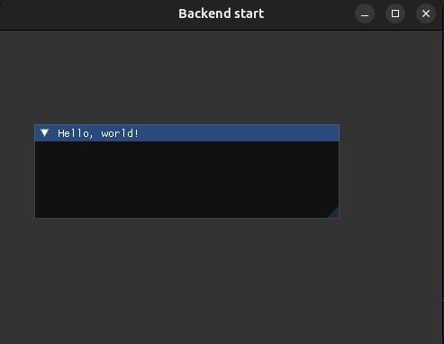
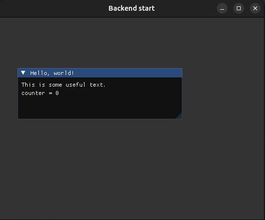
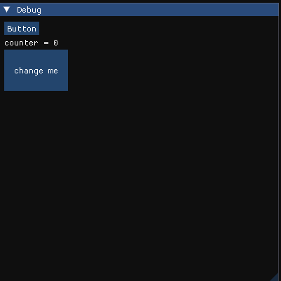
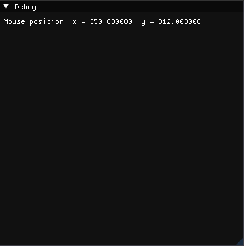

3. Виджеты
Лучший вариант для более полного понимания работы виджетов находится в Demo-версии самой библиотеки. Запустить ее можно при помощи ImGui::ShowDemoWindow();, если в CMakeLists.txt вы подключали исходники ${THIRD_PARTY_DIR}/imgui/imgui_demo.cpp. Далее, уже по названию виджетов в примерах можно найти реализацию любого элемента на экране и их взаимодействия.
Проект только с Demo-окном можно найти по ссылке.
Начало любого виджета (окна внутри главного приложения) начинается с ImGui::Begin(); и должно заканчиваться ImGui::End();. Далее, для примеров виджетов эти конструкции будут проигнорированы для сокращения текста.
{
static int counter = 0;
ImGui::Begin("Hello, world!");
ImGui::End();
}
Здесь будет просто пустое окно с текстом Hello World! в шапке.

Text
Это окно с текстом + текстом с выводом занчения переменной:
{
ImGui::Text("This is some useful text.");
ImGui::Text("counter = %d", counter);
}

Кнопки
С кнопками можно помнить, что проверка нажатия на каждую кнопку должна осуществляться в инструкции if() {}:
{
static int counter = 0;
if (ImGui::Button("Button")){
counter++;
// можно что угодно добавить при нажатии на кнопку
}
ImGui::Text("counter = %d", counter);
}

Работа с устройствами I\O
Для работы с устройствами ввода вывода присутствует структура ImGuiIO. Включение различных устройств осуществляется при помощи флагов конфигурации:
ImGuiIO& io = ImGui::GetIO(); (void)io;
io.ConfigFlags |= ImGuiConfigFlags_NavEnableKeyboard; // Включить Keyboard Controls
io.ConfigFlags |= ImGuiConfigFlags_NavEnableGamepad; // Включить Gamepad Controls
io.ConfigFlags |= ImGuiConfigFlags_DockingEnable; // Включить Docking
io.ConfigFlags |= ImGuiConfigFlags_ViewportsEnable; // Включить Multi-Viewport / Platform Windows. Позволяет работать "окнам" вне основного окна.
После инициализации ImGuiIO может получить доступ к работе с устройствами:
Мышка
Получение текущей позиции мыши:
ImVec2 mouse = ImGui::GetMousePos();
ImGui::Text("Mouse position: x = %d, y = %d", mouse.x, mouse.y);
